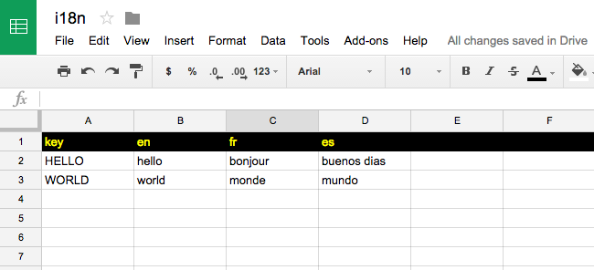
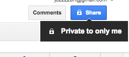
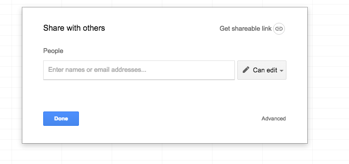
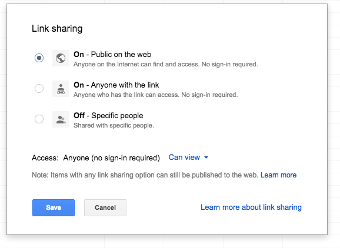
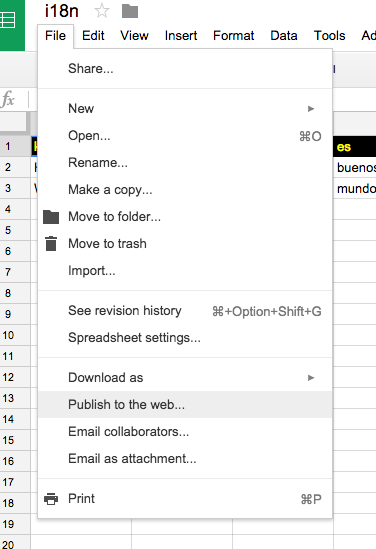

Assemble.io is a really cool static page generator that ties neatly into Grunt, currently my favorite build tool. Assemble works with handlebar templates which allows you to slice up your HTML files into reusable pieces that get assembled at build. One of the cool features is that it allows you to tie in data coming from json or yaml files. If you are not familiar with assemble yet, please go through the documentation before continuing.
A few months ago I discovered this awesome Grunt plugin that parses Google spreadsheet files into i18n files. You can find it here: i18n_gspreadsheet
Combining Assemble.io with this Grunt plugin provides for easy internationalisation for static websites. I prefer using this free workaround now for my static web projects. It can be hooked up with Jenkins in a way that you can provide clients with a basic CMS for their website. I’ll try and explain how to set that up in a future post. For now let’s take a look at the Grunt file and how we can make these two plugins work together.
1. Setting up a Google spreadsheet file
Go to your Google drive and create a new spreadsheet file. Name it as you want. I generally use the url of the website I’m going to create. Set it up so that it has a key column which is named: “key” and two letter syllables for the different languages you want to translate to.

2. Making the google spreadsheet file publicly viewable
Make the Spreadsheet file publicly viewable so that the Grunt plugin can pick up the contents. Click on the sharing button in the top right:

Click on the advanced button:

Switch link sharing on:

And publish the file on the web:

Finally, copy the google spreadsheet key for later use, or leave the browser window or tab open so you can copy the key later. To find the key, look in the url for a sequence of randomness:
3. Installing the dependencies
- Install Assemble.io using npm:
npm i assemble --save-dev
- Install the required Grunt plugin that parses the spreadsheet file:
npm i Grunt-i18n-gspreadsheet --save-dev
- Install Grunt-convert to convert the i18n files to json:
npm i Grunt-convert --save-dev
4. Setting up the Grunt tasks
In our Grunt file, we enable the tasks and add the following constants and the key to your google spreadsheet file:
Grunt.loadNpmTasks('Grunt-i18n-gspreadsheet');
Grunt.loadNpmTasks('Grunt-convert');
Grunt.loadNpmTasks('assemble');Grunt.initConfig({
config: {
src : 'src',
dist : 'dist',
locales : 'locales',
google_document_key: '1gA-5lpURCmllQAuTkc5vDvAv6Y4eXJDyr8XS-QJntes',
default_locale : 'en',
},We add the task that will parse your google spreadsheet file.
It will automaticall create 3 .js language files in a /locales folder.
i18n_gspreadsheet: {
options : {
document_key : '<%= config.google_document_key %>',
key_column : 'key',
default_locale : '<%= config.default_locale %>',
write_default_translations: true
},
your_target: {}
},We use the Grunt-convert task to convert these files into json files and write them to the the correct folders we will use in the assemble process. In this example, we use t.json for the data file name that the assemble process will use in the build process. This will allow us to use {{ t.HELLO }} and {{ t.WORLD }} in our handlebars templates, which will get replaced by the correct translations.
convert: {
options: {
explicitArray: false
},
en2json: {
src : ['locales/en.js'],
dest: 'locales/en/t.json'
},
fr2json: {
src : ['locales/fr.js'],
dest: 'locales/fr/t.json'
},
es2json: {
src : ['locales/es.js'],
dest: 'locales/es/t.json'
}
},We can add a clean task to the entire process and package the sequence in a new task: translate that is to be executed before the assemble process.
npm i Grunt-contrib-clean --save-dev
Grunt.loadNpmTasks('Grunt-contrib-clean');
Grunt.registerTask('translate', [
'clean:locales',
'i18n_gspreadsheet',
'convert'
]);clean: {
locales: {
src: ["locales"]
}
},Finally, we add the assemble tasks that will take care of assembling the website in the different languages using the json files in the locale folders.
The following code will assemble to the root folder / and the different subfolders /fr en /es from the different locale files
(locales/en/t.json, locales/fr/t.json and locales/es/t.json) created by the Grunt-convert task.
assemble: {
en: {
options: {
flatten : true,
data : '<%= config.locales %>/en/t.json',
assets : '<%= config.dist %>/',
layout : '<%= config.src %>/templates/layouts/default.hbs',
partials: [
'<%= config.src %>/templates/partials/*.hbs',
'<%= config.src %>/templates/content/*.md',
'<%= config.src %>/templates/sections/*.hbs'
]
},
files : {
'<%= config.dist %>/': ['<%= config.src %>/templates/pages/*.hbs']
}
},
fr: {
options: {
flatten : true,
data : '<%= config.locales %>/fr/t.json',
assets : '<%= config.dist %>/fr',
layout : '<%= config.src %>/templates/layouts/default.hbs',
partials: [
'<%= config.src %>/templates/partials/*.hbs',
'<%= config.src %>/templates/content/*.md',
'<%= config.src %>/templates/sections/*.hbs'
]
},
files : {
'<%= config.dist %>/fr': ['<%= config.src %>/templates/pages/*.hbs']
}
},
es: {
options: {
flatten : true,
data : '<%= config.locales %>/es/t.json',
assets : '<%= config.dist %>/es',
layout : '<%= config.src %>/templates/layouts/default.hbs',
partials: [
'<%= config.src %>/templates/partials/*.hbs',
'<%= config.src %>/templates/content/*.md',
'<%= config.src %>/templates/sections/*.hbs'
]
},
files : {
'<%= config.dist %>/es': ['<%= config.src %>/templates/pages/*.hbs']
}
}
},The build process will now scaffold our /dist directory like this:
...
fr/...
es/...We can now use the translation keys in our assemble .hbs files that will be replaced by the language content in the google spreadsheet file:
<h1> {{ t.HELLO }}, {{ t.WORLD }} </h1>